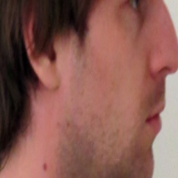

Visualisierung 2. SS2016. Pinetz Thomas, Scheidl Harald
We want to modify a generic 3d model of a face according to two orthogonal images of a face. Imagine you take a picture of yourself ("selfie") from front and from the side. From those pictures, it should be possible for our application to modify a generic 3d model and then project the texture (from the pictures) onto this model. In the next figure, an overview is given.
According to the original paper (citation see below), the following pipeline was proposed. It is split into two main parts: 1) detection of the face in the pictures and 2) modifying the generic model and texturing it. At some steps, we simplified the methods a bit. For example, we don't use active contours to find the eyes, but we just use binary regions for this task. In the following all steps are explained.
Original paper:
[Weon] Weon, SunHee, SungIl Joo, and HyungIl Choi. "Individualized 3D Face Model Reconstruction using Two Orthogonal Face Images." Proceedings of the World Congress on Engineering and Computer Science. Vol. 1. 2012
We're taking two orthogonal images: one from front, the other from the right (as seen from the photographed person). We require that the picture was taken from the same distance and that the images are square (e.g. 640x640).

First, we resize the input images to 320x320, as this size is a good compromise between enough details and good performance. A Gaussian blur is applied to remove noise in the input images. This yields a better segmentation.
Skin segmentation is done in the YCrCb color space (Y=luma, Cr=red-difference, Cb=blue-difference). The threshold values from the original paper work very well, but we provide a slider in the user interface to adjust this threshold if needed. The goal is to get a good segmentation of the facial region.
The three biggest inner regions in the front image are used as potential face components (eyes and mouth). Only the biggest inner region in the side image is used (eye).

A polygon with at least 5 vertices is fit around the face contour. The nose is the rightmost point of this polygon. The chin can be found by starting at the nose and then going down, searching for a transition from a convex to a concave part of the polygon (this can easily be checked by the sign of the determinant of two vectors).

We now have the potential face components (inner regions) and the polygon. With a set of simple geometric rules, the classification of the mouth and eyes can be found. With the help of the polygon, the chin and the nose can be found. The size of the face is also important, as the model later on has to be resized according to the detected face. For this task, we use the boundary points (shown white in the following figure) of the face left and right to the eyes and the last facial point on the line back from the chin.

The binary mask already found is used to segment the face.


The detected face points are used to cut out an initial guess of the textures from the original image. If the user wants to change this texture (e.g. the user wants to use more of the hair from the image), this can be adjusted with two sliders. After this step, we're done
Two textures are generated, one for the front, the other for the side. We first masked the textures to show only the facial components, but to also show the hair we changed this and now just cut out a region of the original image and resize it.
The modelling part also has to know where each facial component lies in the face. Therefore also a textfile holding those informations is written: faceGeometry.txt. It looks something like this and contains the 3d coordinates of eyes, mouth and so on as coordinate triples (that means, 3 lines define the coordinate of one component):
104.983
147.506
227.81
190.057
139.277
227.81
147.52
187
279
148.166
233.958
253.405
147.52
267
240
154
120.772
181
0.210661
0.00220755
1
0.765665
0.00220755
1
0.177273
-0.000319867
1
A generic facial model (open source) was used. We adjusted it with Blender a little bit to fit better for our needs.